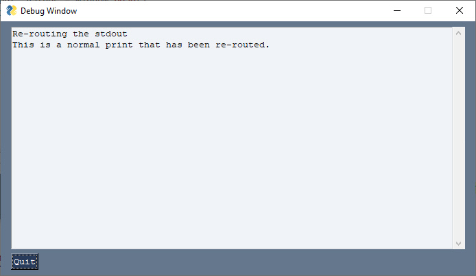
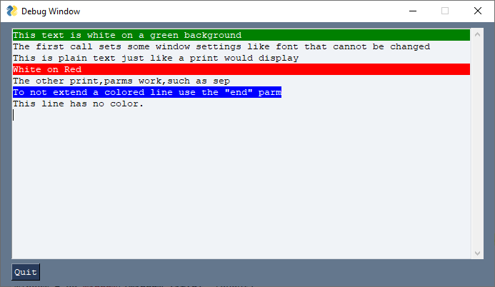
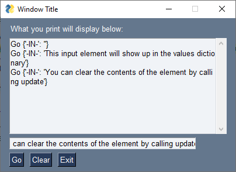
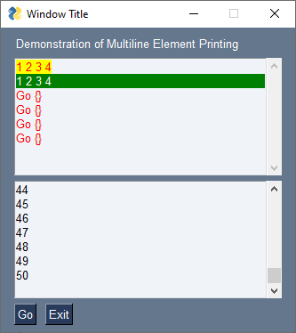

Printing
Outputting text is a very common operation in programming. Your first Python program may have been
But in the world of GUIs where do "prints" fit in? Well, lots of places! Of course you can still use the normal print statement. It will output to StdOut (standard out) which is normally the shell where the program was launched from.
Printing to the console becomes a problem however when you launch using pythonw on Windows or if you launch your program in some other way that doesn't have a console. With PySimpleGUI you have many options available to you so fear not.
These Recipes explore how to retain prints already in your code. Let's say your code was written for a console and you want to migrate over to a GUI. Maybe there are so many print statements that you don't want to modify every one of them individually.
There are at least 3 ways to transform your print statements that we'll explore here
1. The Debug window
2. The Output Element
3. The Multiline Element
The various forms of "print" you'll be introduced to all support the sep and end parameters that you find on normal print statements.
Recipe Printing - #1/4 Printing to Debug Window
The debug window acts like a virtual console. There are 2 operating modes for the debug window. One re-routes stdout to the window, the other does not.
Print - Print to the Debug Window
The functions Print, eprint, EasyPrint all refer to the same funtion. There is no difference whic hyou use as they point to identical code. The one you'll see used in Demo Programs is Print.
One method for routing your print statements to the debuyg window is to reassign the print keyword to be the PySimpleGUI function Print. This can be done through simple assignment.
print = sg.Print
You can also remap stdout to the debug window by calling Print with the parameter do_not_reroute_stdout = False. This will reroute all of your print statements out to the debug window.
import PySimpleGUI as sg
sg.Print('Re-routing the stdout', do_not_reroute_stdout=False)
print('This is a normal print that has been re-routed.')

While both print and sg.Print will output text to your Debug Window.
Printing in color is only operational if you do not reroute stdout to the debug window.
If color printing is important, then don't reroute your stdout to the debug window. Only use calls to Print without any change to the stdout settings and you'll be able to print in color.
import PySimpleGUI as sg
sg.Print('This text is white on a green background', text_color='white', background_color='green', font='Courier 10')
sg.Print('The first call sets some window settings like font that cannot be changed')
sg.Print('This is plain text just like a print would display')
sg.Print('White on Red', background_color='red', text_color='white')
sg.Print('The other print', 'parms work', 'such as sep', sep=',')
sg.Print('To not extend a colored line use the "end" parm', background_color='blue', text_color='white', end='')
sg.Print('\nThis line has no color.')

Recipe Printing - #2/4 Print to Output Element
If you want to re-route your standard out to your window, then placing an Output Element in your layout will do just that. When you call "print", your text will be routed to that Output Element. Note you can only have 1 of these in your layout because there's only 1 stdout.
Of all of the "print" techniques, this is the best to use if you cannot change your print statements. The Output element is the best choice if your prints are in another module that you don't have control over such that "redefining / reassigning" what print does isn't a possibility.
This layout with an Output element shows the results of a few clicks of the Go Button.
import PySimpleGUI as sg
layout = [ [sg.Text('What you print will display below:')],
[sg.Output(size=(50,10), key='-OUTPUT-')],
[sg.In(key='-IN-')],
[sg.Button('Go'), sg.Button('Clear'), sg.Button('Exit')] ]
window = sg.Window('Window Title', layout)
while True: # Event Loop
event, values = window.read()
print(event, values)
if event in (sg.WIN_CLOSED, 'Exit'):
break
if event == 'Clear':
window['-OUTPUT-'].update('')
window.close()

Recipe Printing - #3/4 Print to Multiline Element
Beginning in 4.18.0 you can "print" to any Multiline Element in your layouts. The Multiline.print method acts similar to the Print function described earlier. It has the normal print parameters sep & end and also has color options. It's like a super-charged print statement.
"Converting" exprint print statements to output to a Multiline Element can be done by either
- Adding the
Multilineelement to theprintstatment so that it's calling theMultiline.printmethod - Redefining
print
Added in version 4.25.0 was the ability to re-route stdout and stderr directly to any Multiline element. This is done using parameteres when you create the multiline or you can call class methods to do the rerouting operation after the element is created.
Since you may not be able to always have access to the window when printing, especially in code that it not your own code, another parameter was added auto_refresh. If set to True then the window will automatically refresh every time an update is made to that Multiline element.
3A Appending Element to print Statement to print to Multiline
Let's try the first option, adding the element onto the front of an existing print statement as well as using the color parameters.
The most basic form of converting your exiting print into a Multline based print is to add the same element-lookup code that you would use when calling an element's update method. Generically, that conversion looks like this:
If our Multiline's key is '-ML-' then the expression to look the element up is:
Combing the two transforms the original print to a Multline element print:
Because we're using these Multilne elements as output only elements, we don't want to have their contents returned in the values dictionary when we call window.read(). To make any element not be included in the values dictionary, add the constant WRITE_ONLY_KEY onto the end of your key. This would change our previous example to:
Combining all of this information into a full-program we arrive at this Recipe:
import PySimpleGUI as sg
layout = [ [sg.Text('Demonstration of Multiline Element Printing')],
[sg.MLine(key='-ML1-'+sg.WRITE_ONLY_KEY, size=(40,8))],
[sg.MLine(key='-ML2-'+sg.WRITE_ONLY_KEY, size=(40,8))],
[sg.Button('Go'), sg.Button('Exit')]]
window = sg.Window('Window Title', layout, finalize=True)
# Note, need to finalize the window above if want to do these prior to calling window.read()
window['-ML1-'+sg.WRITE_ONLY_KEY].print(1,2,3,4,end='', text_color='red', background_color='yellow')
window['-ML1-'+sg.WRITE_ONLY_KEY].print('\n', end='')
window['-ML1-'+sg.WRITE_ONLY_KEY].print(1,2,3,4,text_color='white', background_color='green')
counter = 0
while True: # Event Loop
event, values = window.read(timeout=100)
if event in (sg.WIN_CLOSED, 'Exit'):
break
if event == 'Go':
window['-ML1-'+sg.WRITE_ONLY_KEY].print(event, values, text_color='red')
window['-ML2-'+sg.WRITE_ONLY_KEY].print(counter)
counter += 1
window.close()
It produces this window:

There are a number of tricks and techniques burried in this Recpie so study it closely as there are a lot of options being used.
3B Redefining print to Print to Multiline
If you want to use the Multline element as the destination for your print, but you don't want to go through your code and modify every print statement by adding an element lookup, then you can simply redefine your call to print to either be a function that adds that multline element onto the print for you or a lambda expression if you want to make it a single line of code. Yes, it's not suggested to use a lambda expression by assignment to a vairable, but sometimes it may be easier to understand. Find the right balanace for you and ryour projct.
If you were to use a funciton, then your code my look like this:
def mprint(*args, **kwargs):
window['-ML1-' + sg.WRITE_ONLY_KEY].print(*args, **kwargs)
print = mprint
A named lambda expression would perhaps resemeble this:
Putting it all together into a single block of code for you to copy and run results in
def mprint(*args, **kwargs):
window['-ML1-'+sg.WRITE_ONLY_KEY].print(*args, **kwargs)
print = mprint
# Optionally could use this lambda instead of the mprint function
# print = lambda *args, **kwargs: window['-ML1-' + sg.WRITE_ONLY_KEY].print(*args, **kwargs)
layout = [ [sg.Text('Demonstration of Multiline Element Printing')],
[sg.MLine(key='-ML1-'+sg.WRITE_ONLY_KEY, size=(40,8))],
[sg.MLine(key='-ML2-'+sg.WRITE_ONLY_KEY, size=(40,8))],
[sg.Button('Go'), sg.Button('Exit')]]
window = sg.Window('Window Title', layout, finalize=True)
print(1,2,3,4,end='', text_color='red', background_color='yellow')
print('\n', end='')
print(1,2,3,4,text_color='white', background_color='green')
counter = 0
# Switch to printing to second multiline
print = lambda *args, **kwargs: window['-ML2-' + sg.WRITE_ONLY_KEY].print(*args, **kwargs)
while True: # Event Loop
event, values = window.read(timeout=100)
if event in (sg.WIN_CLOSED, 'Exit'):
break
if event == 'Go':
print(event, values, text_color='red')
print(counter)
counter += 1
window.close()
Recipe 3C - Rerouting stdout and stderr directly to a Multiline
This was made available to the tkinter port in version 4.25.0.
The eaiest way to make this happen is using parmaters when creating the Multline Element
- reroute_stdout
- reroute_stderr
If you wish to reroute stdout / stderr after you've already created (and finalized) the Multline, then you can call reroute_stdout_to_here to reroute stdeout and reroute_stderr_to_here to reroute stderr.
To restore the old values back, be sure and call restore_stdout and restore_stderr
This has a risky component to this.
Warning Regarding Threading and Printing
If programs outside of your control are running threads and they happen to call print, then the stdout will be routed to the window. This MAY cause tkinter to crash.
Your thread, by calling print, will trigger code inside of PySimpleGUI itself to be executed. This code can be significant if the stdout has been re-rerouted to a multiline element that has auto-refresh turned on for example. It is unclean how many operations or queued or if the calls from the threads will directly impact tkinter.
The point here it to simple be on the looking for the dreaded "tkinter not in the mainloop" error
Recipe Printing - #4A/4 using cprint function (color printing) to print to Multiline
This method was added to PySimpleGUI tkinter port in June 2020 and needs to be ported to the other ports still.
The idea is have a function, cprint that looks and acts like a normal print.... except, you can "route" it to any multiline element. There are 2 ways to do routing.
- Call
cprint_set_output_destination(window, multiline_key)to tell PySimpleGUI where the output should go - Indicate the output location directly in the
cprintcall itself
Color
The color portion of the cprint call is achieved through additional parameters that are not normally present on a call to print. This means that if you use these color parameters, you cannot simply rename your cprint calls to be print calls. Of course you can safely go the other direction, renaming your print calls to call cprint.
The Aliasing Shortcut Trick
While covered in "cprint", this trick can save you MASSIVE amount of typing. It works well in PyCharm too.
Would I do this in a huge production code base. No, but I'm wring a little 100 line packet of fun.
IF you're tire of writine sg.xxxxx as much as I am, then maybe you'll like this hack too.
Through simple assignment, you can rename PySimpleGUI functions. You add them to your local name space so you no longer need the sgl. part.
For example. I'm tired of writing sg.cprint. I can fix this by adding a line of code to make an alias and then using the aliase insteast.
I could even make it super short.
Now all I call is cp('This is what I want to print') The cool thing about PyCharm is that it knows these are the same and so the DOCSTRINGS work with them!!
Yes, you can rename the entire Elements ane still get all the documentation as you type it in.
So that you don't have to type: sg.cprint every time you want to print, you can add this statement to the top of your code:
cprint = sg.cprint
Now you can simply call cprint directly. You will still get the docstrings if you're running PyCharm so you're not losing anything there.
Recipe 4A
This Recipe shows many of the concepts and parameters. There is also one located in the Demo Programs area on GitHub (http://Demos.PySimpleGUI.org).
import PySimpleGUI as sg
"""
Demo - cprint usage
"Print" to any Multiline Element in any of your windows.
cprint in a really handy way to "print" to any multiline element in any one of your windows.
There is an initial call - cprint_set_output_destination, where you set the output window and the key
for the Multiline Element.
There are FOUR different ways to indicate the color, from verbose to the most minimal are:
1. Specify text_color and background_color in the cprint call
2. Specify t, b paramters when calling cprint
3. Specify c/colors parameter a tuple with (text color, background color)
4. Specify c/colors parameter as a string "text on background" e.g. "white on red"
Copyright 2020 PySimpleGUI.org
"""
def main():
cprint = sg.cprint
MLINE_KEY = '-ML-'+sg.WRITE_ONLY_KEY # multiline element's key. Indicate it's an output only element
MLINE_KEY2 = '-ML2-'+sg.WRITE_ONLY_KEY # multiline element's key. Indicate it's an output only element
output_key = MLINE_KEY
layout = [ [sg.Text('Multiline Color Print Demo', font='Any 18')],
[sg.Multiline('Multiline\n', size=(80,20), key=MLINE_KEY)],
[sg.Multiline('Multiline2\n', size=(80,20), key=MLINE_KEY2)],
[sg.Text('Text color:'), sg.Input(size=(12,1), key='-TEXT COLOR-'),
sg.Text('on Background color:'), sg.Input(size=(12,1), key='-BG COLOR-')],
[sg.Input('Type text to output here', size=(80,1), key='-IN-')],
[sg.Button('Print', bind_return_key=True), sg.Button('Print short'),
sg.Button('Force 1'), sg.Button('Force 2'),
sg.Button('Use Input for colors'), sg.Button('Toggle Output Location'), sg.Button('Exit')] ]
window = sg.Window('Window Title', layout)
sg.cprint_set_output_destination(window, output_key)
while True: # Event Loop
event, values = window.read()
if event == sg.WIN_CLOSED or event == 'Exit':
break
if event == 'Print':
cprint(values['-IN-'], text_color=values['-TEXT COLOR-'], background_color=values['-BG COLOR-'])
elif event == 'Print short':
cprint(values['-IN-'], c=(values['-TEXT COLOR-'], values['-BG COLOR-']))
elif event.startswith('Use Input'):
cprint(values['-IN-'], colors=values['-IN-'])
elif event.startswith('Toggle'):
output_key = MLINE_KEY if output_key == MLINE_KEY2 else MLINE_KEY2
sg.cprint_set_output_destination(window, output_key)
cprint('Switched to this output element', c='white on red')
elif event == 'Force 1':
cprint(values['-IN-'], c=(values['-TEXT COLOR-'], values['-BG COLOR-']), key=MLINE_KEY)
elif event == 'Force 2':
cprint(values['-IN-'], c=(values['-TEXT COLOR-'], values['-BG COLOR-']), key=MLINE_KEY2)
window.close()
if __name__ == '__main__':
main()
Recipe Printing - #4B/4 using cprint with Multiline Parameters (PySimpleGUI version 4.25.0+)
Beginning in verison 4.25.0 of the tkinter port you'll find new parameters for the Multline Element that makes the job of re-routihn your output much easier. Rather than calling the cprint_set_output_destination function, you will use the Multline element's initial parameters to both setup the routing of the print output, but also mark the element as being a write-only element. You can set the parameter write_only to True in order to make this a write-only Multiline.
The new parameters you'll be interested in are:
- write_only
- auto_refresh
- reroute_cprint
This will cut out the call previously required to set up the routing. You will be setting up the routing through the Multiline creation ifself.
You will continue to be able to manually route stdout and stderr to the Multline uning the reroute_stdout_to_here call. Sorry about the wordiness of the call, but you're probably only going to have one in your code. So it didn't seem so bad to have something descriptive enough that you won't need a comment.
Automatic Refresh
The Multiline element has an option for auto-refreshing after an update. The Output element automatically refreshes after each write. Hopefully this will not slow things down considerably.
Here is the code for 4B
import threading
import time
import PySimpleGUI as sg
"""
Threaded Demo - Uses Window.write_event_value communications
Requires PySimpleGUI.py version 4.25.0 and later
This is a really important demo to understand if you're going to be using multithreading in PySimpleGUI.
Older mechanisms for multi-threading in PySimpleGUI relied on polling of a queue. The management of a communications
queue is now performed internally to PySimpleGUI.
The importance of using the new window.write_event_value call cannot be emphasized enough. It will hav a HUGE impact, in
a positive way, on your code to move to this mechanism as your code will simply "pend" waiting for an event rather than polling.
Copyright 2020 PySimpleGUI.org
"""
THREAD_EVENT = '-THREAD-'
cp = sg.cprint
def the_thread(window):
"""
The thread that communicates with the application through the window's events.
Once a second wakes and sends a new event and associated value to the window
"""
i = 0
while True:
time.sleep(1)
window.write_event_value('-THREAD-', (threading.current_thread().name, i)) # Data sent is a tuple of thread name and counter
cp('This is cheating from the thread', c='white on green')
i += 1
def main():
"""
The demo will display in the multiline info about the event and values dictionary as it is being
returned from window.read()
Every time "Start" is clicked a new thread is started
Try clicking "Dummy" to see that the window is active while the thread stuff is happening in the background
"""
layout = [ [sg.Text('Output Area - cprint\'s route to here', font='Any 15')],
[sg.Multiline(size=(65,20), key='-ML-', autoscroll=True, reroute_stdout=True, write_only=True, reroute_cprint=True)],
[sg.T('Input so you can see data in your dictionary')],
[sg.Input(key='-IN-', size=(30,1))],
[sg.B('Start A Thread'), sg.B('Dummy'), sg.Button('Exit')] ]
window = sg.Window('Window Title', layout)
while True: # Event Loop
event, values = window.read()
cp(event, values)
if event == sg.WIN_CLOSED or event == 'Exit':
break
if event.startswith('Start'):
threading.Thread(target=the_thread, args=(window,), daemon=True).start()
if event == THREAD_EVENT:
cp(f'Data from the thread ', colors='white on purple', end='')
cp(f'{values[THREAD_EVENT]}', colors='white on red')
window.close()
if __name__ == '__main__':
main()